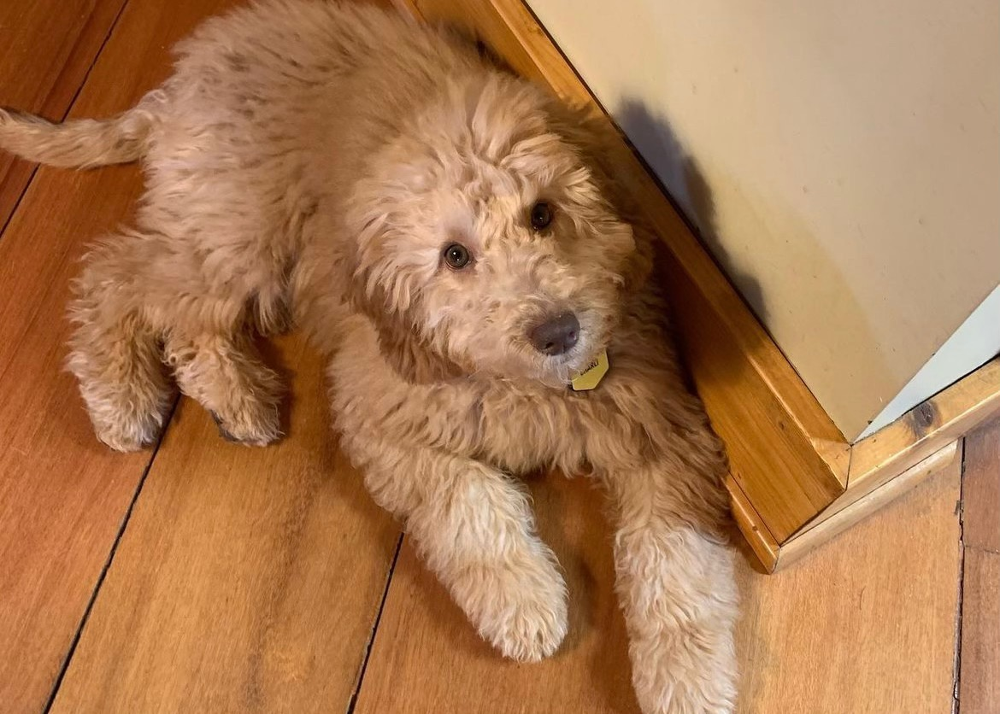
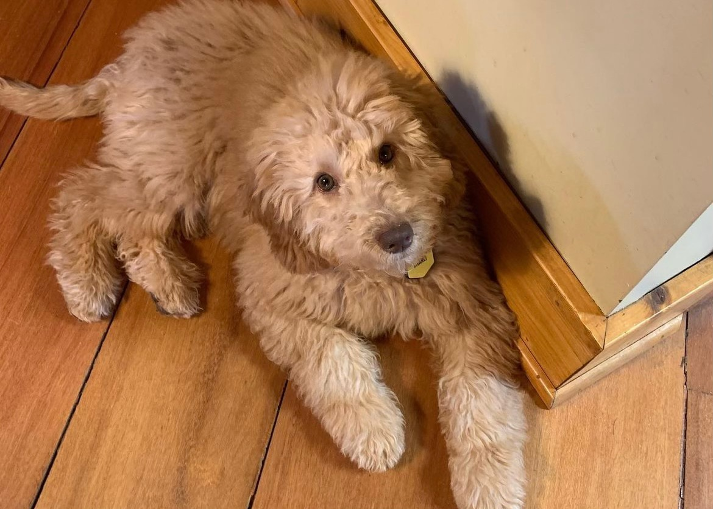

Pets
Bacon Q Dog

Bacon Q. Dog is a 9yr old labradoodle. He prefers to spend his days lounging among the three different beds/couches that his family has gifted him. He enjoys a walk or two around the neighborhood, as long as he can pretend that he doesn't see any of the other animals to avoid the embarrassment of not wanting to admit he has no wolf-like skills in chasing them.
At night just as the rest of the family is ready to relax, Bacon suddenly wants to release all of his energy. He will place his toys on a mini couch and frantically drag the couch around, giving his toys "a ride." There is also a lot of rolling. Lots and lots of rolling.
Photo Gallery


Likes
- Belly rubs
- Playing tug-of-war
- Sneaking onto the couch
Charli

Meet Charli, the delightful golden doodle whose presence radiates warmth and joy. Charli's coat, a perfect blend of golden hues and soft curls, is as inviting as his friendly disposition. With expressive, soulful eyes that seem to reflect his playful spirit, Charli has an irresistible charm that captures the hearts of everyone he meets. His fluffy tail wags in constant excitement, a clear indicator of his boundless enthusiasm for life.
Charli is not just a furry bundle of energy; he's also a true people-pleaser. Affectionate and gentle, he excels at forming strong bonds with his human family members. Whether it's offering a paw for a handshake or leaning in for a snuggle, Charli thrives on human connection. This sociable pup is equally at ease in the great outdoors, where he happily engages in games of fetch or frolics in the grass. Charli's adaptability and friendly nature make him a cherished companion, bringing a sense of happiness and camaraderie to any home fortunate enough to have him as a part of the family.
Photo Gallery
 


Likes
- Wrestling
- Swimming
- Playing Fetch
Rocco

Rocco, the husky, exudes an undeniable charm with his striking appearance and vibrant personality. His sleek, silver and white coat glistens in the sunlight, giving him an almost regal presence. Rocco's piercing blue eyes, framed by distinctive facial markings, add an element of mystery to his gaze, hinting at the intelligence within. Beneath his beautiful exterior, Rocco is a bundle of energy and enthusiasm. Always ready for adventure, he thrives on outdoor activities, whether it's a brisk run through the snow or a game of fetch in the backyard. His friendly demeanor and social nature make him a hit at the dog park, where he effortlessly befriends both fellow canines and their human companions.
Despite his playful nature, Rocco is also known for his gentle and affectionate side. At home, he transforms into a loyal companion, curling up next to his owners for cozy cuddle sessions. Rocco's expressive howls and occasional "talkative" moments create a unique form of communication that endears him to those around him. Whether it's the joyous bounce in his step or the warm gaze that follows his loved ones, Rocco's personality is a perfect blend of adventurous spirit and loving companionship.
Photo Gallery


Likes
- Howling
- Swimming
- Eating bacon
Rocket

Rocket (also named huihui) is a 6-month pomeranian puppy with big eyes and a small, black cute nose. Rocket is named rocket because he runs so fast and energetic all day without even having some rest. Rocket loves to carry his little toy walking around the house and jumping towards my bed.
Rocket is friendly to all human beings. He will be a little shy at first, but will say hi to you after a few seconds. He is also friendly to dogs, especially the small breed, because the large size dogs are hard for him to smell lol. If you meet rocket, don’t hesitate to say hi to him!! He will be super happy the whole day.
Photo Gallery


Likes
- Dinner
- Chewing Bones
- Snuggles
Maggie

Maggie, the epitome of loyalty and grace, is a dog whose presence brings a sense of calm and comfort. With a sleek, golden coat that shimmers in the sunlight, Maggie possesses an elegant beauty that commands attention. Her deep, soulful eyes hold a gentle wisdom, reflecting the depths of her affectionate nature. Maggie's dignified demeanor is complemented by a regal posture, making her a truly majestic companion.
Beneath her composed exterior, Maggie is a devoted and loving friend. Known for her unwavering loyalty, she stands by her human family through thick and thin. Maggie's quiet companionship is a source of solace, and her gentle nudges and warm gazes convey a deep understanding of the emotions around her. Whether strolling through the neighborhood or lounging at home, Maggie carries herself with a timeless grace that endears her to all who cross her path. This canine confidante is not just a pet but a cherished member of the family, adding a touch of elegance and unconditional love to every moment shared together.
Photo Gallery


Likes
- Howling
- Dressing up
- Napping